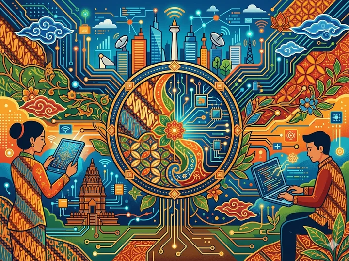
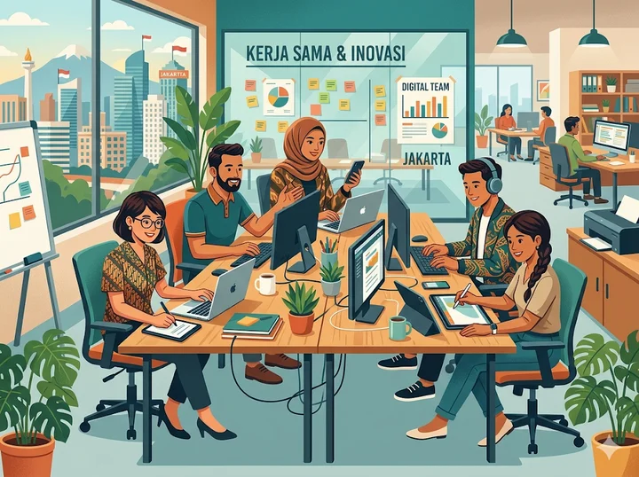
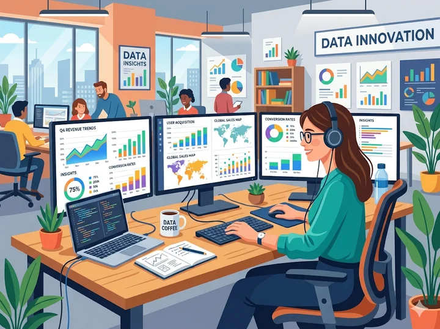
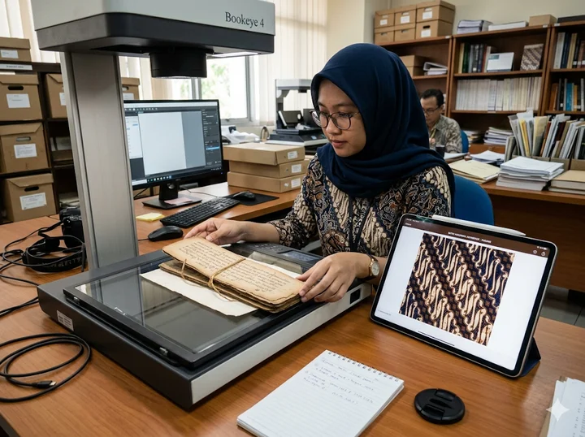
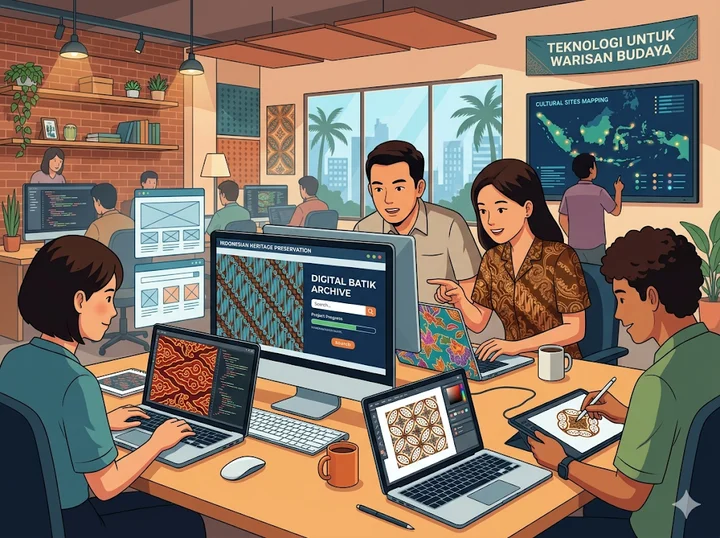
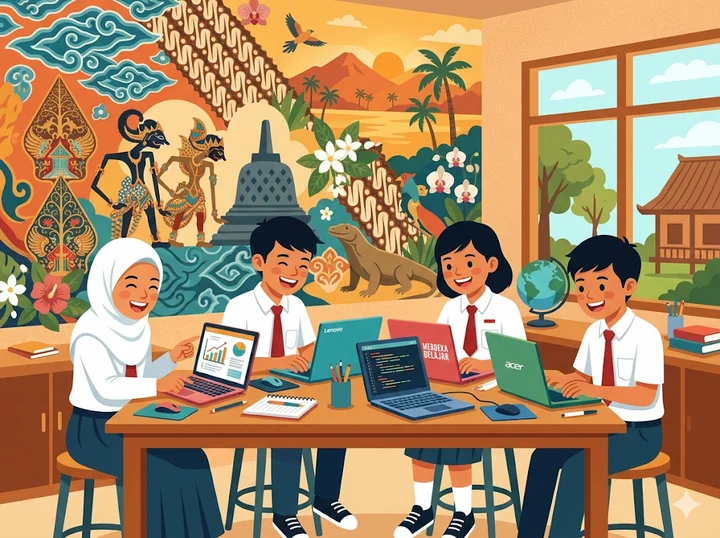

Setelah mempelajari materi ini, kamu akan bisa:
Apa saja yang akan kita pelajari?
Profesi informatika adalah pekerjaan yang memanfaatkan ilmu komputer dan teknologi informasi untuk menyelesaikan berbagai masalah di dunia nyata.
Di era digital seperti sekarang, hampir semua bidang — mulai dari pendidikan, bisnis, kesehatan, hingga budaya — membutuhkan tenaga ahli di bidang ini.

Membuat aplikasi dan program komputer, baik untuk ponsel, website, maupun sistem perusahaan.

Mengumpulkan, mengolah, dan menganalisis data untuk membantu perusahaan mengambil keputusan yang tepat.
Contoh: Sebuah toko online menggunakan analis data untuk mengetahui produk mana yang paling laku, sehingga bisa menentukan stok barang yang perlu ditambah.
Merancang tampilan agar aplikasi terasa mudah, nyaman, dan menyenangkan dipakai.
Fokus pada tampilan visual aplikasi. Seperti warna, tombol, ikon, dan layout agar terlihat menarik.
Fokus pada kemudahan dan kenyamanan. Bagaimana agar pengguna tidak bingung saat menggunakan aplikasi.
Tugasnya: Mengelola dan memastikan jaringan komputer di suatu organisasi berjalan lancar — termasuk internet, Wi-Fi kantor, dan sistem internal.
Petugas yang mengatur lalu lintas agar tidak macet.
Tugasnya: Melindungi sistem komputer, data, dan jaringan dari serangan hacker atau kebocoran informasi.
Indonesia termasuk negara dengan jumlah serangan siber tertinggi di Asia Tenggara.
Dunia kerja masa depan penuh dengan peluang digital!
Membuat konten kreatif untuk edukasi atau pemasaran.
Memasarkan produk atau jasa melalui media sosial & platform digital.
Merancang dan mengembangkan game yang seru dan interaktif.
Membantu pengguna saat menghadapi kendala teknis perangkat.
Mengelola infrastruktur data yang tersimpan di "awan".
Dan masih banyak lagi...
Digitalisasi Budaya adalah proses mengubah warisan budaya ke dalam format digital agar bisa disimpan, disebarkan, dan dinikmati oleh lebih banyak orang — kapan saja dan di mana saja.

Indonesia memiliki 300+ suku bangsa dengan kekayaan budaya luar biasa.
Menampilkan koleksi museum Indonesia secara virtual ke seluruh dunia.
Arsip digital naskah kuno Nusantara oleh Perpustakaan Nasional RI.
Kunjungi Museum Nasional Indonesia secara online dari mana saja.
Portal resmi pelestarian budaya Indonesia milik Kemendikbudristek.
Platform populer untuk melestarikan musik dan pertunjukan seni daerah.
Dan Terus Berkembang...

Siapa saja yang bekerja di balik layar proyek pelestarian warisan budaya digital?
Merancang tampilan website/aplikasi budaya yang menarik.
Membangun platform digital untuk menyimpan warisan budaya.
Menganalisis tren dan minat masyarakat terhadap budaya.
Melindungi arsip digital negara dari serangan siber.
Peluang kerja terbuka lebar, termasuk untuk lulusan SMK!
Kamu bisa melanjutkan kuliah ke jurusan:
Sebuah perusahaan ingin mengetahui produk mana yang paling banyak dibeli pelanggan selama satu bulan terakhir, lalu menggunakan informasi itu untuk menentukan strategi penjualan. Profesi apa yang paling tepat untuk pekerjaan tersebut?
Pemerintah Indonesia ingin menyimpan ribuan naskah kuno Nusantara agar tidak rusak dan bisa diakses oleh masyarakat di seluruh dunia melalui internet. Kegiatan ini disebut...?
Sekolah kamu baru saja mengalami kebocoran data siswa akibat serangan dari pihak tidak bertanggung jawab. Profesi informatika mana yang seharusnya mencegah hal ini terjadi?
Profesi Informatika: Dev, Analyst, UI/UX, Network, dan Security.
Setiap profesi informatika memiliki peran unik yang penting.
Digitalisasi Budaya: Pelestarian warisan budaya melalui teknologi.
Profesi informatika berperan langsung dalam pelestarian budaya.
Peluang karier informatika terbuka sangat lebar bagi lulusan SMK.
"Teknologi ada untuk melayani manusia — dan budaya adalah jiwa dari sebuah bangsa."
"Generasi muda yang melek teknologi adalah harapan terbesar untuk masa depan bangsa."
🙋 Ada pertanyaan?
